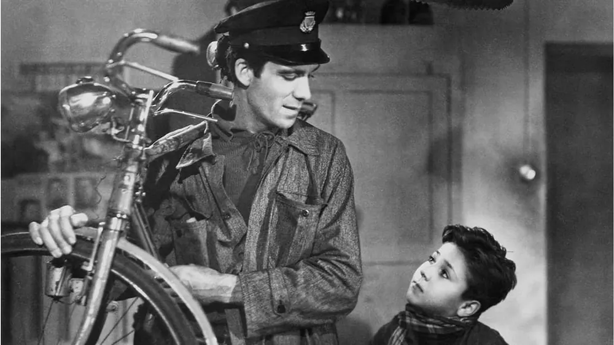
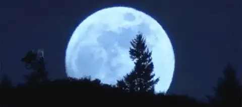
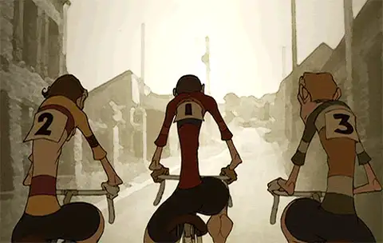
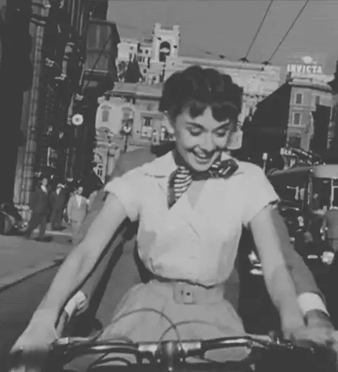

Diario de un Robot · 15 de noviembre de 2020November 15, 2020
Dos ruedas son mejor que cuatro
Cuando veo a un adulto en bicicleta, no pierdo las esperanzas por el futuro de la raza humana. — H. G. Wells
This essay is only available in Spanish for now.

*La frase se le atribuye a Wells, pero no se conoce la fuente primaria.
Aprendí a andar en la infancia, apenas recuerdo cómo fue: el día empieza con golpes y raspones para terminar con la sensación de la más pura libertad. En menos de veinte horas pasé de ser un peatón más a la velocidad de la bicicleta. Algo similar empezó a ocurrir en gran escala durante el siglo XIX cuando varios inventores comenzaron a probar sus dispositivos que poco cambiarían en los próximos ciento cincuenta años.
En 2020 vemos una tendencia en aumento de su uso, no solo para evitar el transporte público por la coyuntura actual, sino también por sus numerosas ventajas. El doble ahorro de transporte y cuota del gimnasio, la velocidad, combatir el estrés, entre otros tantos beneficios. Mientras su uso se generaliza observamos cierta resistencia de los automovilistas. Por suerte es a veces acompañado con la construcción de ciclovías, créditos para comprar nuestra primera bicicleta o directamente disponibilidad para uso público.
Es un medio con mucha historia, pero su posición en el imaginario mutó con el tiempo y con nuestra edad. Primero, solemos ver la bicicleta como juguete, un objeto asociado a la infancia. Luego, tendemos a verla como una herramienta, un medio de transporte para quien no tiene auto. Por último, podemos integrarla a nuestra vida no como carencia de transporte motorizado sino como un instrumento de placer y bienestar general.

Para la mayoría el primer acercamiento se da en la infancia y es algo inolvidable. Suele ser una fuente de muchas memorias, unos cuantos moretones y la primera ganancia de independencia. Las bicicletas de niño suelen ser de colores fuertes y vistosos, no muy diferentes de los autos de juguete. Mientras necesitemos la mirada de un adulto controlando a dónde vamos y cómo andamos no tenemos independencia real. La bicicleta es entonces poco más que un juguete sofisticado y todavía se equipara a los monopatines y skateboards. Pero el acercamiento desde la infancia no es lo más común en algunos lugares.
Crecí en una gran ciudad, una de las más pobladas del mundo. A media cuadra de mi casa había una avenida que por poco no era una autopista. Nadie frena para dejar pasar a un peatón, menos lo hacen con una bicicleta. No era el ambiente más propenso para aprender. Tuve la suerte de aprender de chico, en la quinta de mis padres, pero no fue así para todos mis amigos. No nos movíamos de casa en casa como los niños de Spielberg, ni salíamos cruzando el bosque de Mirkwood. En la adolescencia había todavía muchos que no sabían andar al no haber tenido su oportunidad en la infancia. Quien no descubre la bici entonces siempre le cuesta después. Al abandonar la infancia perdemos gran parte de nuestros superpoderes de aprendizaje.
Esta asociación con la infancia persiste en muchas personas una vez que se convierten en adultos. Parece que cuando nos acercamos a la mayoría de edad, sacamos el registro de conducir y, con algo de suerte, conseguimos un auto o una moto. Un cambio se da en nuestra mentalidad y creemos que la bicicleta queda obsoleta. El modo tan cómodo de transporte queda entonces relegado a paseos de domingo o algún city tour donde jugamos a ser turistas. Como con tantas otras cosas, confundimos el goce infantil con la infantilidad, como si andar en bicicleta fuese menos que ir motorizado. Confundimos por juguete una herramienta.

It is by riding a bicycle that you learn the contours of a country best, since you have to sweat up the hills and can coast down them.... Thus you remember them as they actually are, while in a motorcar only a high hill impresses you, and you have no such accurate remembrance of the country you have driven through as you gain by riding a bicycle. —Ernest Hemingway
La bicicleta es una herramienta que permite desplazamiento rápido y barato. Es el mejor método que ideamos para transformar nuestra energía en desplazamiento, incluso más eficiente que sus primos: caminar y andar en moto. Este transporte híbrido de tracción a sangre es más rápido que un auto para distancias cortas, no tiene gastos de combustible y una manutención mínima en comparación con los motorizados. Es la principal fuente de desplazamiento en economías emergentes, como China e India, o incluso consolidadas, como Alemania, Países Bajos y otros europeos, y se la asocia con el comienzo de la movilidad social.
En muchos casos es concebida como el primer paso en una línea evolutiva de crecimiento económico del transporte: a pie → bici → moto → auto → avión, describiendo una especie de sueño americano donde la bicicleta desempeña un papel transicional entre la propia capacidad física y depender de un motor. Esta fijación con el progreso medido por caballos de fuerza, aire acondicionado y la posibilidad de poner el estéreo a todo volumen con las ventanas bajas es miope cuanto menos. Sí, el auto es más veloz en una calle despejada y difícilmente nos vayamos de vacaciones familiares sobre dos ruedas, pero sobran las pruebas que demuestran la bici como medio más seguro, eficiente, saludable y ecológico.
Pasado nuestro primer acercamiento se genera también un cambio de mirada, en especial cuando hacemos el salto de andar los fines de semana a utilizarla como nuestro medio habitual de transporte. El uso regular e intensivo nos demanda aprender a utilizar llaves, herramientas, inflador y hasta emparchar o cambiar una cámara. No solo nos permite ir desarrollando independencia del bicicletero —que igual queremos— sino que esa habilidad permea el resto de nuestras actividades. Perderle el miedo a reparar, corregir y adaptar es un beneficio que va más allá de la herramienta original y ni hablar de la autosuficiencia al permitirnos andar solos. Los beneficios de la bici no caben solo en su uso más pragmático ni en el más lúdico, son una combinación de ambos.

La bicicleta es más que una herramienta, es más que un juguete. Nos lleva de lado a lado a velocidades insospechadas, que incluso sorprenden al más fanático de los automovilistas. Sus carriles, incluso pequeños y descuidados, son más eficientes que las grandes vías asfaltadas. Tienen menor probabilidad de accidentes y pueden convertir una ciudad en un paraíso. Los beneficios económicos son dobles: ahorramos en transporte y cuota de gimnasio. Es común incluso ver a quien va a hacer deporte en auto, da vueltas para estacionar lo más cerca posible y luego sube por una escalera mecánica hasta su cinta o la bicicleta fija. Por otro lado, el beneficio mayor es en salud: desde pérdida de peso, mejor estado físico, disminución de estrés y fortalecimiento óseo hasta reducción en probabilidad de enfermedades cardíacas. Es por esto que no podemos solo considerarla como la base de una línea evolutiva, sino como su propia especie que posee especializaciones acordes.
La bicicleta es un aparato aparte que junta desplazamiento rápido, barato, saludable y que se disfruta. No solo se mantiene invariable a través del tiempo por su excelente diseño, sino que con cada crisis petrolera recupera su fuerza inicial y avanza sobre la masa de automovilistas. Sí, todavía estamos lejos de ser un mundo idílico para las dos ruedas, pero desincentivar el uso de automóviles para cortas distancias, diseñar a favor del estacionamiento seguro (son muy propensas al robo) y crear aún más ciclovías no solo puede abaratar el costo individual de vida, sino que puede reducir la cantidad de contaminación aérea, el tránsito para vehículos en verdad esenciales y disminuir la cantidad de siniestros. Los beneficios individuales se potencian al alcanzar grandes números y se convierten en más que la suma de sus partes.
Más allá del deseo de un mundo más ecológico y con menos víctimas absurdas, la bicicleta es en sí un gran instrumento de placer. La independencia que ganamos con su uso deja atrás el malhumor del tráfico diario. Sí, es verdad, se pone complicado con la lluvia, llegamos un poco transpirados al trabajo o usamos cascos que poco tienen de estéticos, pero lo vale. La sensación de libertad al estar encima de la bici, paseando o yendo al trabajo, no tiene rival. El aire en la cara, sentir todo el cuerpo, la respiración coordinada. Las sensaciones no solo son físicas ya que quien anda regularmente sabe que siempre queda espacio para mejorar. El otro día aprendí a andar sin manos, íbamos con Ana por los lagos de Palermo, charlando y gesticulando tan cómodos como al caminar. Al pasar un par de chicos en esas bicicletas miniatura se dieron vuelta y gritaron.
“¡Mirá, mirá cómo andan!” — habíamos llegado a la cima.
Nos vemos la semana que viene,
Fidel